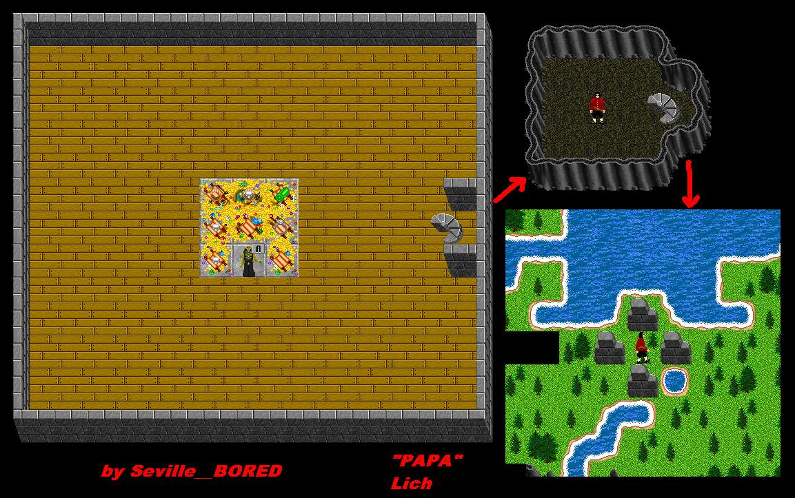

| The Liches 2 Papa Lich |
 |
| Back to Nork. |
| To Frore. |
| Back to Lich 1. |
| Papa Lich is waiting for you after the battles with the smaller Liches. Papa has the UZI Amulet if you can kill him. Papa Lich casts ESpear and Darkness while hitting with a Flail. Papa can also hide from smaller crits. A good tactic is to stand in the middle of the room and attack. If you get too tore up, run to one of the corners to IH up. Running up the stairs will take you out of the lairs. Once up the stairs, you can't come back down. |
| To Warped Papa. |